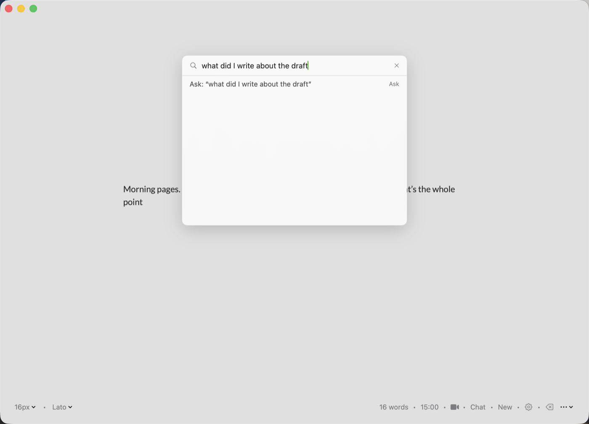
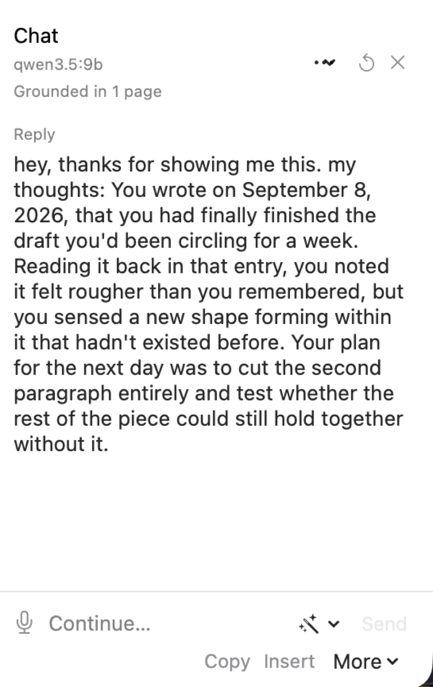
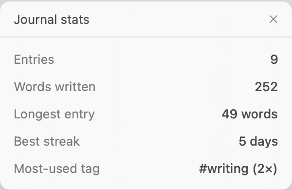
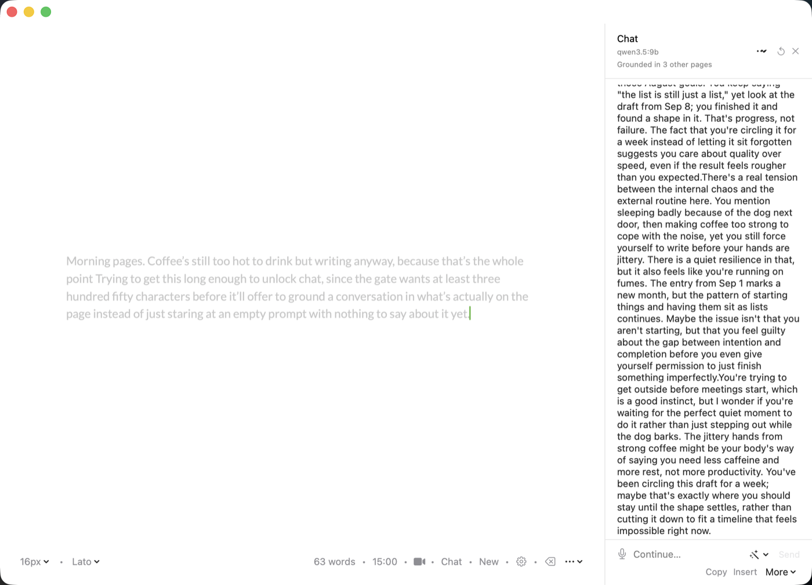
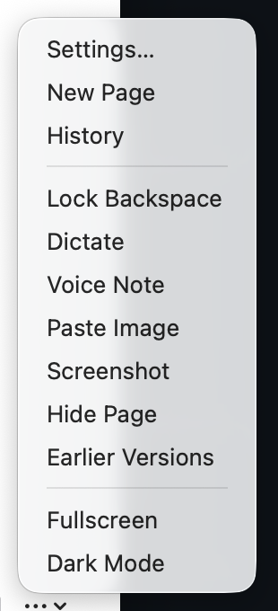

A quiet, local-first writing room for macOS. One page. Your disk. No account.

What's in the room
A timer if you want urgency. Backspace lock if you want momentum. Markdown files you can open in any editor. Everything lives on your Mac in ~/Documents/Freewrite/ (or a folder you choose).
Timed sessions, backspace lock, typewriter scroll, sentence focus, soft markdown, smart quotes, privacy blur, find on page.
History with search, pins, streak, and a month calendar. Go (⌘K) to jump to any past page. Tags, on-this-day, weekly review, per-page Touch ID lock, earlier versions, lifetime stats.
Video journaling and voice notes with live transcription, plus Read Aloud to hear any page read back — all on-device.
Chat grounded in this page, or ask your whole journal a question from Go (⌘K) — a local Ollama model, nothing leaves your Mac. Or watch Claude Code / Codex write in a side panel.
Deleting an entry asks first, then goes to the macOS Trash — recoverable, not gone forever.
Entries are plain markdown. Import a page from another app, export one as PDF, Markdown, or text — or the whole journal as a zip.
Grounded, on-device
Not just a reflection on today's page — a real question about your whole history, answered by a local Ollama model that only uses what you've actually written. Nothing leaves your Mac.



See it running
A short tour of the page, dark mode, Settings, and the History calendar.




Keyboard-first
A few of the ones you'll use most. The full list is in the app and the README.
| ⌘N | New page |
| ⌘K | Go — commands and journal search |
| ⌘F / ⌘G | Find in this page / next match |
| ⌃⌘F | Fullscreen |
| ⌘⇧P | Privacy blur |
| ⌘⇧H | History |
| ⌘⇧O | Ollama chat |
| ⌘⇧V | Read Aloud |
| ⌘⇧B | Backspace lock |
No account needed
Download the latest release, or build it yourself — Command Line Tools are enough, Xcode isn't required.
Latest release ↗ — unzip, drag Quire into Applications, then right-click → Open the first time (ad-hoc signed, not notarized).
git clone the repo, then ./run-tests.sh && ./build.sh from the freewrite/ folder.